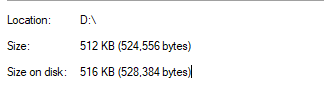
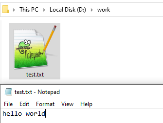
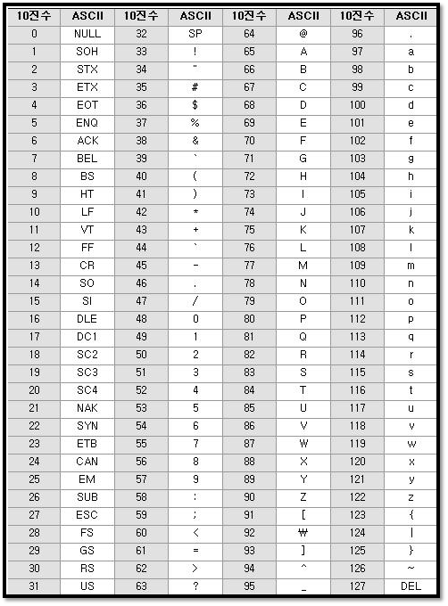
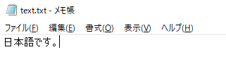
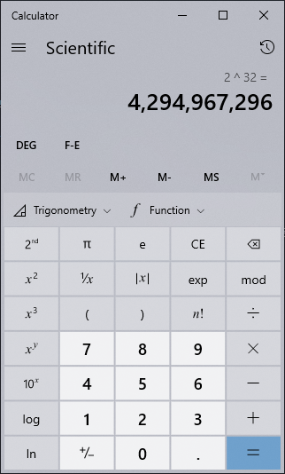
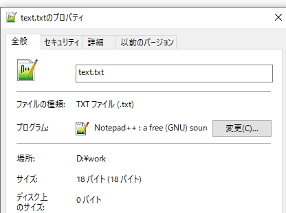
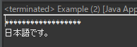
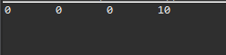

[Java] 28. 文字タイプ(CharacterSet)とエンディアン(endian)で変換する方法
こんにちは。明月です。
この投稿はJavaで使う文字タイプ(CharacterSet)とエンディアン(endian)で変換する方法に関する説明です。
以前の投稿でIOとSocketに関して説明したことがあります。
link - [Java] 26. ファイル(IO)を扱う方法(ファイル作成、ファイル修正、アクセス日付変更とIOをclose(リソース返却)する理由、Closableインタフェース)
link - [Java] 27. ネットワーク通信(Socket)をする方法
JavaにはIOとSocketでInputStreamとOutputStreamを利用してファイルを読み取りか書き込みをするし、通信はメッセージを送信、受信します。
このInputStreamとOutputStreamで扱うデータタイプはbyte配列(byte[])タイプです。このbyteは何かというとデータのバイナリというする8bitのデータの2進データです。

我々が普通にファイルのサイズを話す時に上のイメージみたいに何バイトという言います。つまり、上のファイルはbyte配列でbyte[524556]になっているデータということにします。
そうすると我々がファイル伝送プログラムを作成すると思えばどうでしょう。
IOからファイルを読み取ってbyte[]タイプに変換します。それをSocketを通って伝送します。受信側はSocketを通ってbyte[]タイプでデータを受け取ってそのままにIOを利用してファイルを書き込んだらそれがファイル送受信プログラムになります。
byte[](stream)のタイプは分かりました。そうするとプログラムの中で使う各種のデータタイプはどのようにbyte[]に変換するでしょう。
例えば、Stringタイプで文字列のデータを入れてbyte[]に変換して格納すればそれがtextドキュメントになります。
import java.io.File;
import java.io.FileOutputStream;
import java.io.OutputStream;
public class Example {
// 実行関数
public static void main(String[] args) {
try {
// ファイルで格納するtest変数宣言
String test = "hello world";
// Stringタイプをbyteタイプに変換
byte[] binary = test.getBytes();
// ファイルインスタンス生成
File file = new File("d:\\work\\test.txt");
// Streamインスタンス生成
OutputStream stream = new FileOutputStream(file);
// OutputStreamを利用してtest変数データのバイナリをファイルに作成。
stream.write(binary);
// Streamリソース返却
stream.close();
} catch (Throwable e) {
e.printStackTrace();
}
}
}

文字列はbyte[]に変換する時に扱うデータ値は決まっています。それがASCIIコードということです。
過去、Javaがある前のC言語時代にはPCが日本語はできなく、英語だけ使える時がありました。 その時には英語の大文字、小文字の52語、特殊文字まですべて128個の文字だけ使いました。

ASCIIコードはすべて128個でcharタイプ(範囲: -128~127)の整数(0~127)部分で入れる文字です。それで文字列を扱う時にはcharタイプを使いました。
でも現在は英語だけではなく、日本語など様々な言語があります。
様々な言語をデータタイプをcharタイプで使おうと思えば足りないです。ひらがな、かたかなだけならできると思いますが、漢字まではbyte(unsigned char - つまり、符号がないchar範囲:0 ~ 255(2^8))では足りないです。
その為、各の国はbyteを組み合いにして言語コードを作りました。でも、これも世界標準を合わせなかったので、問題が発生します。
例えば、日本の製品に韓国のデータを入れると文字化けや読み込みができない時があります。(私の経験では昔のカーナビに韓国や中国のMP3(音楽ファイル)を入れるとファイル名が文字化けになる。)
なので、何処でも日本語で書いているドキュメントは日本語で表示するために文字コード標準化をしました。その標準化した文字コードはUnicodeです。
import java.io.File;
import java.io.FileOutputStream;
import java.io.OutputStream;
public class Example {
// 実行関数
public static void main(String[] args) {
try {
// ファイルで格納するtest変数宣言
String test = "日本語です。";
// Stringタイプをbyteタイプに変換 (unicodeに変換)
byte[] binary = test.getBytes("unicode");
// ファイルインスタンス生成
File file = new File("d:\\work\\test.txt");
// Streamインスタンス生成
OutputStream stream = new FileOutputStream(file);
// OutputStreamを利用してtest変数データのバイナリをファイルに作成。
stream.write(binary);
// Streamリソース返却
stream.close();
} catch (Throwable e) {
e.printStackTrace();
}
}
}

このUnicodeは2~4byteを使います。4byteなら2の32乗なので総4,294,967,296文字を扱うことができます。

上の例は6文字でunicode区分データ(2byte)と含めて18byteになります。日(2byte)本(2byte)語(3byte)で(2byte)す(2byte)。(3byte)

unicodeには基本2byteから表現するので、英語だけ作成しても既存ASCIIコードからサイズが2倍になります。つまり、既存ASCIIコートからUnicodeに変換することでプログラム容量が2倍になったことです。
現在はハードディスクや容量が安くなったので、ASCIIコードをUnicodeに使うことで発生するパフォーマンス差異は少ないですが、10年前だと急にデータサイズが2倍になるとコストが2倍以上に増加することなので、Unicodeを必要性は知っていますが、使うのが簡単ではなかったです。製品の値段と関係があることですから。
そのため、また発表した文字コードがUTF-8です。
UTF-8の場合は1byteから6byteの可変データです。UTF-8は既存ASCIIコードは1byteに表現します。
なので、既存の英語で作成した製品のパフォーマンスも維持して文字コードの標準化になった文字列コードです。なので、最近のすべての文字列コードは基本UTF-8を使うことになりました。
JavaでこのUTF-8を扱う方法は簡単です。
Stringにbyteを変換する時にパラメータにUTF-8のStringデータを入れればUTF-8形式のbyte[]タイプが生成します。
byteからStringタイプに変換する時にはbyteの形式がUTF-8ならパラメータにUTF-8を入れれば変換します。
public class Example {
// 実行関数
public static void main(String[] args) {
try {
// ファイルで格納するtest変数宣言
String test = "日本語です。";
// Stringタイプをbyteタイプに変換 (UTF-8に変換)
byte[] binary = test.getBytes("UTF-8");
// UTF-8のbyte[]データをASCIIコードに変換
String test1 = new String(binary,"ASCII");
// 文字化け
System.out.println(test1);
// UTF-8のbyte[]データをUTF-8コードに変換
String test2 = new String(binary,"UTF-8");
// コンソール出力
System.out.println(test2);
} catch (Throwable e) {
e.printStackTrace();
}
}
}

UTF-8タイプをASCIIタイプに変換すれば文字化けが発生します。当たり前ですが。。プログラムの中で文字化けが発生するのは100%に文字タイプ(CharacterSet)が合わないからです。
文字列はbyte[]に変換することは了解します。
数字のデータはbyte[]タイプにどのように変換するでしょう。
プログラムでよく使う数字のタイプはintタイプです。intタイプは基本に4byteのデータタイプです。
つまり、intタイプをbyte[]タイプに変換するとbyte[4]の配列になります。
このintタイプをbyteに変換するクラスはByteBufferがあります。
import java.nio.ByteBuffer;
public class Example {
// 実行関数
public static void main(String... args) {
// intのサイズほどバッファーを生成
ByteBuffer data = ByteBuffer.allocate(Integer.BYTES);
// intタイプの10値を格納
data.putInt(10);
// byteタイプに出力
byte[] binary = data.array();
// コンソール出力
for (byte b : binary) {
System.out.print(b < 0 ? b + 256 : b);
System.out.print("\t");
}
}
}

byte[4]にintタイプのデータがあります。参考にintタイプをIOによってファイルを作成すると10という値が表示することではありません。IOで10ということに作成するためにはStringタイプで10のデータを格納してbyte[]に変換することです。つまり、ASCIIコードなら49,48というデータです。
そうするとIOではStringタイプだけ使うし、SocketのデータもStringタイプでデータを扱えば別に他のタイプのデータはbyte[]に変換する必要がないと思います。
でも、ファイル伝送プログラムを作成する時、ファイルのサイズは受信側に教えてバッファーサイズを作成して待機することにします。でもStringタイプでサイズを教えば文字列(数字)の長さが違います。500なら3文字、5000なら4文字です。
でも、4byteに決めてintタイプで伝送すれば、受信側にも4byteで待機してファイル長さを受信できます。
でも、intタイプをbyte[4]に変換する時にも規約があります。それがエンディアンといいますが、byte配列の後ろからデータを満たすのはビックエンディアン(Big endian)といいます。参考にC#の場合はbyte配列の前からデータを満たすのはリトルエンディアン(Little endian)といいます。
import java.nio.ByteBuffer;
import java.nio.ByteOrder;
public class Example {
// 実行関数
public static void main(String... args) {
// intのサイズほどバッファーを生成
ByteBuffer data = ByteBuffer.allocate(Integer.BYTES);
// リトルエンディアン(Little endian)順番に設定
data.order(ByteOrder.LITTLE_ENDIAN);
// intタイプの10値を格納
data.putInt(10);
// byteタイプに出力
byte[] binary = data.array();
// コンソール出力
for (byte b : binary) {
System.out.print(b < 0 ? b + 256 : b);
System.out.print("\t");
}
}
}
上のリトルエンディアンはbyte[0]からデータを満たします。
エンディアンはintタイプだけではないです。Stringタイプ以外の原始データはすべて変換できます。
import java.nio.ByteBuffer;
public class Example {
// 実行関数
public static void main(String... args) {
// doubleのサイズほどバッファー生成
ByteBuffer data = ByteBuffer.allocate(Double.BYTES);
// doubleタイプの値の10を格納
data.putDouble(100.52d);
// byteタイプに出力
byte[] binary = data.array();
// コンソール出力
for (byte b : binary) {
System.out.print(b < 0 ? b + 256 : b);
System.out.print("\t");
}
// 改行
System.out.println();
// binaryのバッファーを生成
ByteBuffer ret = ByteBuffer.wrap(binary);
// 値を出力
System.out.println(ret.getDouble());
}
}
ここまでJavaで使う文字タイプ(CharacterSet)とエンディアン(endian)で変換する方法に関する説明でした。
ご不明なところや間違いところがあればコメントしてください。
- [Java] 35. コーディング規約設定(Google Standard coding style)2019/09/26 21:31:25
- [Java] 34. WindowでMariaDBをインストールする方法2019/09/25 19:58:30
- [Java] 33. オープンライブラリを参照する方法(eclipseからmavenを連結)2019/09/24 19:35:54
- [Java] 32. Reflection機能を使う方法(Annotation編)2019/09/24 00:19:25
- [Java] 31. Reflection機能を使う方法(Variable編)2019/09/20 22:34:40
- [Java] 30. Reflection機能を使う方法(Method編)2019/09/19 20:20:10
- [Java] 29. Reflection機能を使う方法(Class編)2019/09/18 20:02:14
- [Java] 28. 文字タイプ(CharacterSet)とエンディアン(endian)で変換する方法2019/09/17 20:22:02
- [Java] 27. ネットワーク通信(Socket)をする方法2019/09/16 23:42:46
- [Java] 26. ファイル(IO)を扱う方法(ファイル作成、ファイル修正、アクセス日付変更とIOをclose(リソース返却)する理由、Closableインタフェース)2019/09/13 20:03:58
- [Java] 25. Objectクラス(notify、waitの使い方)2019/09/13 00:58:31
- [Java] 24. Javaの同期化(Synchronized)とデッドロック(Deadlock)2019/09/11 23:06:09
- [Java] 23. スレッドプール(Threadpool)を使う方法2019/09/10 21:55:36
- [Java] 22.スレッド(Thread)を使う方法2019/09/06 22:30:49
- [Java] 21. アノテーション(Annotation)を使う方法2019/09/05 22:58:20
- [Design pattern] 3-6. ステートパターン(State pattern)2021/11/17 20:04:47
- [Design pattern] 3-5. メメントパターン(Memento pattern)2021/11/16 20:01:36
- [Design pattern] 3-4. イテレータパターン(Iterator pattern)2021/11/15 19:31:28
- [CentOS] Linux環境(CentOS)でCassandra(NoSQL DB)をインストールする方法(DBeaverブラウザでNoSQL使い方)2021/11/12 17:33:58
- [Design pattern] 3-3. コマンドパターン(Command pattern)2021/11/05 17:01:42
- [Window] apache-tomcatでロードバランシング(Load balancing)する方法とセッションクラスタリング（セッション共有）2021/11/05 16:58:45
- [Window] Apacheでmod_jkとmod_proxyの差異、apacheでtomcatのwebsocketのプロキシフォーワードする方法2021/11/05 16:55:05
- [PHP] Apache環境の同じホスト中でPHPとJava(Servlet)を同時に起動、運用する方法2021/11/05 16:52:04
- [C#] 61. ウィンドウフォーム(Window form)でスレッド(Thread)を使い方、クロススレッド問題解決2021/11/04 19:29:51
- [Design pattern] 3-2. 責任の連鎖パターン(Chain of responsibility pattern)2021/11/04 19:27:58
- [Design pattern] 3-1. ストラテジーパターン(Strategy pattern)2021/11/03 18:38:52
- [C#] 60. ウィンドウフォーム(Window form)のイベント設定する方法2021/11/02 21:18:08
- [Design pattern] 2-7. ファサードパターン(Facade pattern)2021/11/02 19:32:31
- [Design pattern] 2-6. プロキシパターン(Proxy pattern)2021/11/01 19:42:44
- [Design pattern] 2-5. フライウェイトパターン(Flyweight pattern)2021/10/29 19:48:27